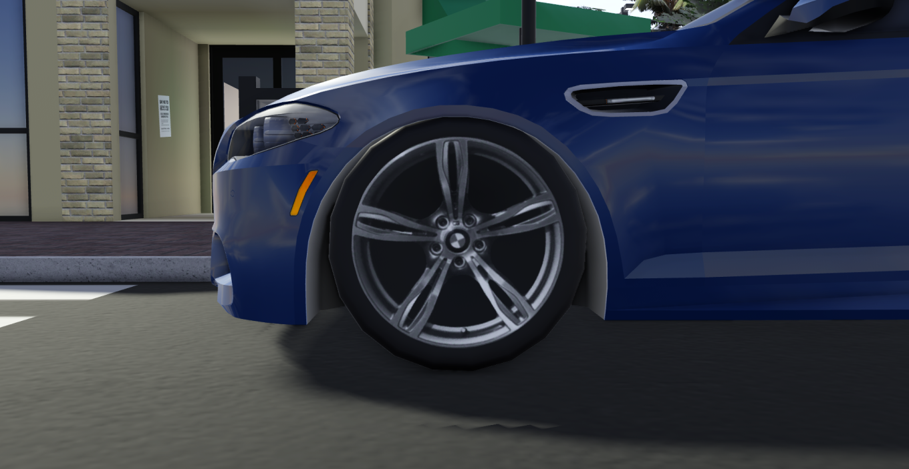
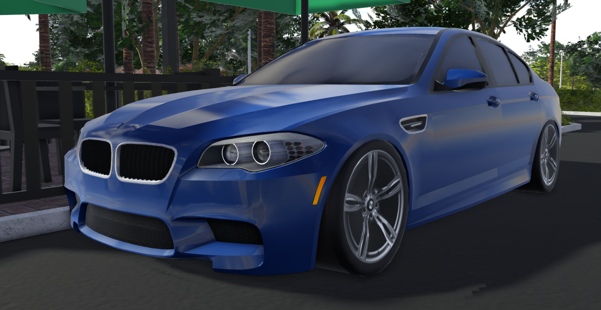
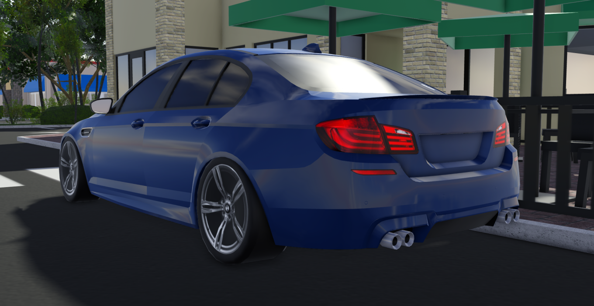
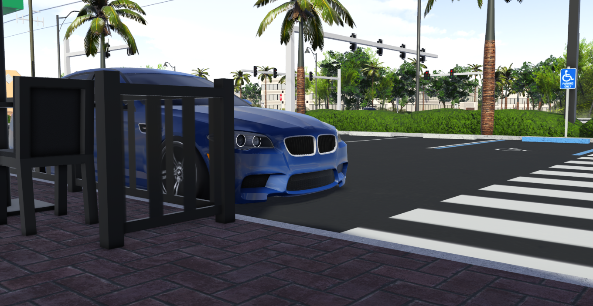

Most drift builds advertise themselves.
Big wheels. Loud aero. Extreme Camber
This one doesn't.
Today, we talk about Mia's BMW M5 (F10).
Finished in Estoril Blue, sitting on factory Style 343M wheels, the car keeps its factory face. A subtle drop tightens the stance without disrupting the OEM+ silhouette.

It looks like it never left the showroom.
Pretty neat!
Under the hood sits the S63B44TU — a twin-turbo 4.4L V8, the same core that defined this generation of M5 as the “Perfect M5”.
Like a lot of hellcats, isn’t a random sedan pretending to drift.
BMW didn’t guess what this chassis could do — they proved it, even holding the world record for the longest continuous drift.
The platform has history, and this build leans into it.
The 7-speed dual-clutch transmission gave the F10 a raw, mechanical edge the newer F90’s ZF never captured, and a smoothness the E60’s SMG could never refine.
Technical Specs:
- Drift-tuned setup
- Stage 3 engine
- Stage 3 turbos
- Stage 3 transmission
- Stage 3 weight reduction


On paper, it sounds aggressive, and it lives up to it -
It doesn’t announce itself.
It doesn’t ask permission.
It just snaps sideways when the throttle hits the floor.
So, what you experience while sitting in with Mia is just violence in a factory silhouette.

Stay AOI // Stay Driven // Stay Connected